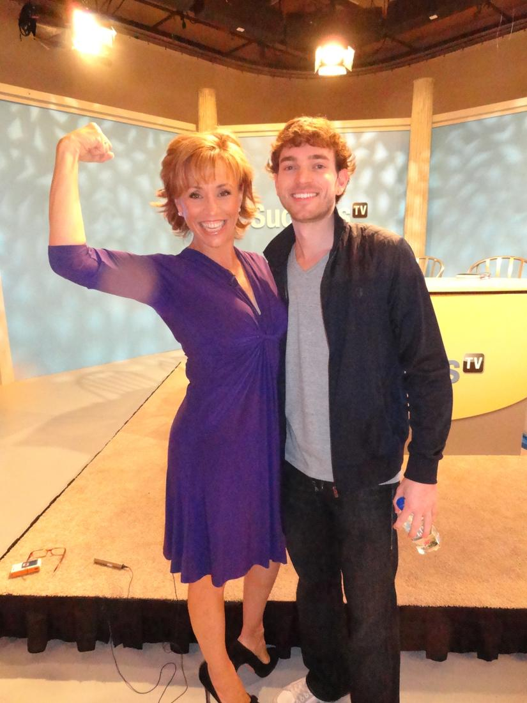
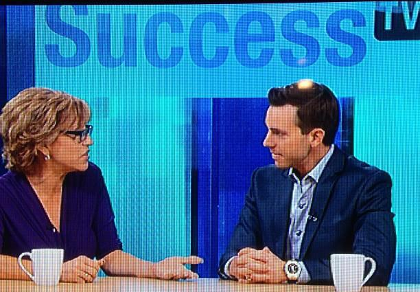

Anthony & Adrian Morrison

www.FreeGiftFromForbes.com
Since launching his first business in 2005 when he was just twenty-one, Anthony Morrison’s career has expanded exponentially. A self-taught Internet mogul, Morrison devised a one-man business operation while attending college full-time. The success of that venture saved his family’s fortunes, and from there Morrison proceeded to devise a system
atic approach to entrepreneurial success and used it to develop another eleven companies, all of which have been highly profiable.
Raised along with his brother and sister in Mississippi by Roger and Sheila Morrison, young Anthony grew up in a family that encouraged intellectual curiosity, empathy for others and healthy self-esteem. Always independent and assertive, Anthony gave his parents a glimpse of his potential when, at the age of seven, he decided he wanted a Jacuzzi. Told by his mother that he would have to work to earn it, Anthony sold candy bars door-to-door until he had earned the money for the Jacuzzi. One year later, at age eight, he set his sights on buying his father a motorcycle and did just that, enlisting his siblings in the effort.
Other successful part-time ventures followed, setting a pattern for his later life: find something you enjoy, learn as much about that subject as possible, and pursue your goals with single-minded enthusiasm. Whether it was selling baseball cards or customizing his prize Mustang, Anthony showed a predilection for achieving his goals and creating avenues to achieve them more efficiently and profitably. Without realizing it, he was creating the blueprint for his later success.
When financial ruin threatened his family, Anthony expanded upon a business he’d had as a teen and established his first company, Cool Blue Performance. Within one year he was working with every parts supplier in the industry; the following year he began manufacturing his own parts and dominating the industry.
Since then Anthony Morrison has started eleven additional companies, created a charity, Christmas For Kids, and now operates one of the most successful seminar tours in the United States. Anthony not only teaches aspiring entrepreneurs how to succeed in business, he helps them start their first business and provides one-on-one instruction.
The year 2008 saw Anthony expanding into the world of publishing with his first book, The Hidden Millionaire: Twelve Principles to Uncovering the Entrepreneur in You. Part memoir, part inspirational tale and part instructional tome, The Hidden Millionaire brings Anthony Morrison’s template for success to an entire new audience. With his book in the hands of thousands of people around the country Anthony hopes to share his story and inspire, motivate, and empower everyone who reads it to create their own success story.
In 2009 Anthony wrote his second book, Advertising Profits From Home, in an effort to teach people around the country how to use his techniques and strategies to create a successful online marketing campaign. Anthony has created a blueprint for a successful marketing campaign and platform for affiliate marketers around the world, and he shares these secrets in his new book. Anthony filmed a TV show with Mark Victor Hansen, C0-Author of The Chicken Soup Series, to promote his new book on a national level. The show is currently airing nationwide.
Today, Anthony Morrison travels the country sharing his story and teaching his skills to budding entrepreneurs. He is at home in Mississippi, where he was born and raised, and he remains close to the loving family and friends who supported him in his ascent to entrepreneurial greatness .
Who Exactly Is ADRIAN MORRISON?
True financial independence comes from working for yourself. This is something I have known and implemented since I got out of college. Today, I own and operate several internet marketing companies that have created financial freedom and time freedom for myself and my family. My true passion is teaching other hungry entrepreneurs how to get started and realize true success online.
Born, raised and currently living in Madison, Miss., Adrian graduated from the University of Mississippi with degrees in History and Pre-Law. While pursuing a law degree, Adrian’s family lost everything when his father’s multi-million dollar retirement in WorldCom stock plummeted. Adrian and big brother, Anthony, left graduate school to pursue online marketing
Fast-forward…. Adrian is an online marketer specializing in e-commerce, social media marketing, search engine marketing, pay per click (PPC) and media buying. He has turned a few bucks from marketing ads on Facebook to a multi-million dollar marketing company with his e-commerce and affiliate marketing ventures.
Adrian’s made up to $21,000 a day in revenue and $420,000 in a single month in online income. “I decided early on that I didn’t want to be part of the ‘status quo’ in the United States,” Adrian explains. “I’ve never wanted people to tell me what to do, when to do it, how much I can make, when I can go to lunch, when I can spend time with my family or when I can go on vacation. I want to make those decisions for myself.”
With Adrian’s success have come exciting opportunities. On Christmas of 2006, he and brother Anthony were able to fulfill a lifelong dream to start a charity aimed at helping underprivileged kids enjoy a Merry Christmas [ChristmasForKids.us]. Each year, they choose 25 Salvation Army “Angel Children” and buy everything on their Christmas list – from bikes to clothing for the year to an Xbox 360.
Adrian has also had the opportunity to share his story of success and online marketing knowledge with people across the United States and Canada. As a public speaker, Adrian has hosted events to train, mentor and consult thousands who are interested in realizing their potential as a thriving entrepreneur.
“Financial stability doesn’t come from a good job,” Adrian explains. “It comes from the ability to create income for yourself no matter the state of the economy. It’s the ability to adapt to the Internet’s changes and master new outlets before anyone else. That’s what I teach my students how to do.”
When Adrian’s not busy developing software and new ideas to help himself and his students become successful in their online marketing ventures, he enjoys spending time with his family and friends and traveling the world helping others find financial freedom

Free · live on Zoom every Sunday
The Secret Pitch Formula
Join Forbes live for the Pitch Secrets Masterclass. Over 80,000 people have learned the 7-second hook, the three pitch patterns behind $2.5 billion in sales, and how to close without sounding salesy. Free, with a gift worth $500 for registering.
Sundays, 2 p.m. PT / 5 p.m. ET. Registration and the Zoom link are at pitchsecretstraining.com.